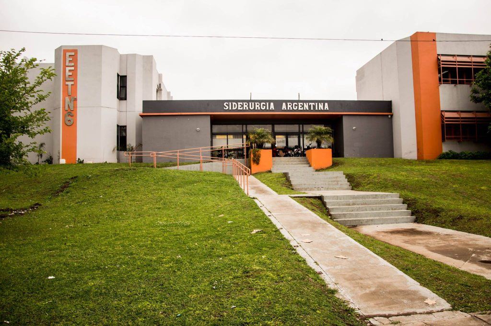

Hola, soy Gerónimo Bravo, tengo 20 años. Soy técnico electrónico graduado de la escuela Técnica 6 de barrio Somisa.
Escuela de Educación Secundaria Técnica N°6
Mi única experiencia en la programación fue en sexto y séptimo año de la carrera, todo en microcontroladores. Primero con microcontradores PIC de la serie 16 con lenguaje C y C++, seguido de los microcontroladores arduino para proyectos.
Microcontrolador PIC
Microcontrolador Arduino